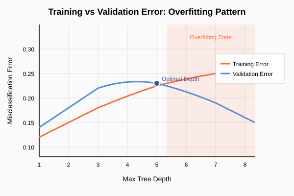
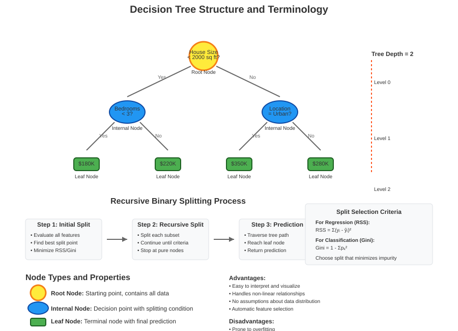
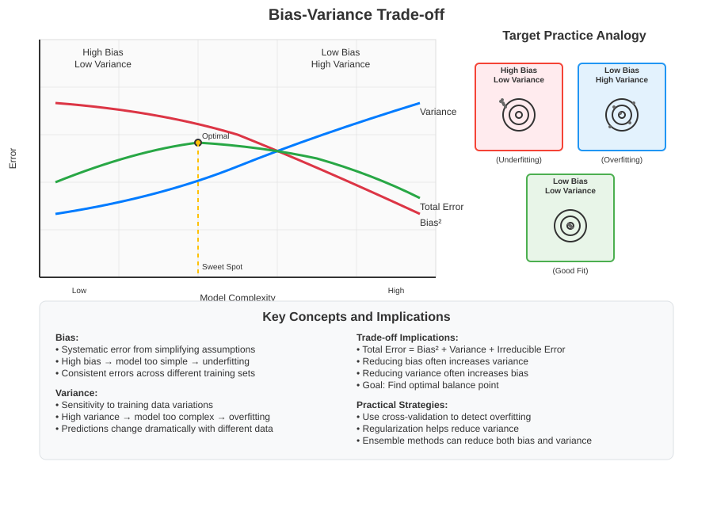
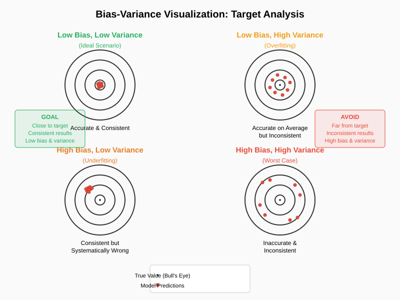
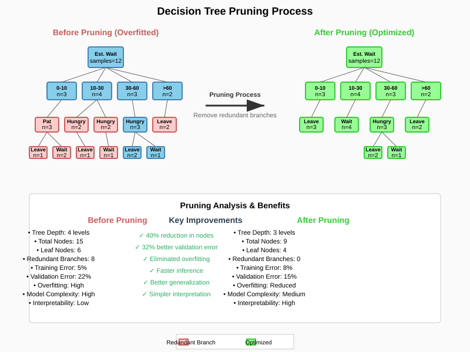

Decision Tree Pruning: Addressing Overfitting in Machine Learning
🧭 Quick Navigation
- Introduction
- The Overfitting Problem
- Titanic Dataset Case Study
- Understanding Bias-Variance Tradeoff
- Pruning Methodology
- Practical Examples
- Limitations and Conclusions
- References & Further Reading
📚 Introduction
Decision tree pruning is a crucial technique in machine learning designed to combat the pervasive problem of overfitting. While decision trees are intuitive and powerful models that mirror human decision-making processes, they are particularly susceptible to learning noise in training data, leading to poor generalization on unseen datasets.
Pruning addresses this issue by systematically reducing the complexity of fully-grown decision trees, striking an optimal balance between model accuracy and generalization capability. This technique serves as a bridge to more advanced ensemble methods like Random Forests, which inherently address overfitting through different mechanisms.
Key Concepts:
- Overfitting: When models learn training data too well, including noise
- Generalization: A model's ability to perform well on unseen data
- Pruning: Post-processing technique to reduce tree complexity
- Bias-Variance Tradeoff: Fundamental concept in model complexity optimization
⚠️ The Overfitting Problem
Overfitting represents one of the most significant challenges in decision tree learning. As trees grow deeper and incorporate more features, they achieve progressively better performance on training data while simultaneously degrading on validation data.

Mathematical Foundation
The relationship between model complexity and error can be expressed as:
Total Error = Bias² + Variance + Irreducible Error
Where: - Bias: Error due to overly simplistic assumptions - Variance: Error due to sensitivity to small fluctuations in training data - Irreducible Error: Noise inherent in the problem
Manifestation in Decision Trees
- Training Error: Monotonically decreases with tree depth
- Validation Error: Initially decreases, then increases (U-shaped curve)
- Optimal Depth: Point where validation error is minimized
Example Observation: In the Titanic dataset analysis, optimal performance occurred at depth 4, with deeper trees showing degraded validation performance despite perfect training accuracy.
🚢 Titanic Dataset Case Study
The Titanic dataset provides an excellent real-world example of overfitting in decision trees, containing survival information for 891 passengers with a 38% survival rate.
Dataset Features
| Feature | Type | Values | Description |
|---|---|---|---|
| Survived | Binary | {0, 1} | Target variable: survival status |
| Pclass | Categorical | {1, 2, 3} | Passenger class (socio-economic proxy) |
| Sex | Categorical | {Male, Female} | Passenger gender |
| Age | Ordinal | {<13, 13-25, 25-40, 40-65, 65+} | Age groups |
| Embarked | Categorical | {Cherbourg, Southampton, Queenstown} | Port of embarkation |
| FamilySize | Numerical | 0+ | Number of family members aboard |
Decision Tree Analysis

Key Findings: - Primary Split: Gender (Sex) emerged as the most discriminative feature - Color Coding: Orange nodes indicate higher death rates, blue nodes indicate higher survival rates - Gender Bias: Significantly higher survival rates for females (right branch shows more blue) - Secondary Factors: Age and family size provided additional discrimination power
Training Configuration: - Split Ratio: 80% training, 20% validation - Criterion: Entropy minimization - Maximum Depth: 5 levels - Root Entropy: 0.507
⚖️ Understanding Bias-Variance Tradeoff
The bias-variance tradeoff represents a fundamental principle in machine learning that directly motivates pruning techniques. Understanding this concept is crucial for effective model optimization.

Mathematical Representation
For a model f̂(x) approximating true function f(x):
E[(y - f̂(x))²] = Bias²[f̂(x)] + Var[f̂(x)] + σ²
Four Scenarios Visualization

- Low Bias, Low Variance (Ideal): High accuracy, consistent predictions
- Low Bias, High Variance: Accurate on average, inconsistent predictions
- High Bias, Low Variance: Consistently inaccurate predictions
- High Bias, High Variance (Worst): Inaccurate and inconsistent
Complexity Trade-offs
Increasing Model Complexity: - ✅ Reduces Bias: Better fit to training data - ❌ Increases Variance: More sensitive to training set variations - 🎯 Goal: Find optimal complexity minimizing total error
Practical Implications: - Shallow Trees: High bias, low variance (underfitting) - Deep Trees: Low bias, high variance (overfitting) - Optimal Trees: Balanced bias-variance for best generalization
✂️ Pruning Methodology
Pruning is a post-processing technique that systematically reduces decision tree complexity by removing branches that provide minimal improvement in classification accuracy.

Algorithm Overview
Phase 1: Grow Full Tree 1. Build complete decision tree using standard algorithms 2. Continue splitting until reaching stopping criteria (e.g., pure leaves) 3. Allow tree to potentially overfit training data
Phase 2: Evaluate Branch Utility 1. For each branch, calculate misclassification error contribution 2. Assess impact of removing branch on overall accuracy 3. Identify branches with minimal classification benefit
Phase 3: Prune Strategically 1. Remove branches where aggregation doesn't significantly increase error 2. Work bottom-up from leaves toward root 3. Maintain essential discriminative structure
Mathematical Criterion
For branch removal decision:
Prune if: Error_pruned - Error_full < threshold
Where: - Error_pruned: Classification error after branch removal - Error_full: Classification error with full branch - threshold: Acceptable error increase tolerance
Benefits and Limitations
Benefits: - ✅ Reduces overfitting - ✅ Improves generalization - ✅ Decreases model complexity - ✅ Faster inference
Limitations: - ❌ Computationally expensive - ❌ Counter-intuitive process (grow then shrink) - ❌ May remove important subtle patterns - ❌ Requires careful threshold tuning
💡 Practical Examples
Restaurant Waiting Time Example
The restaurant waiting time prediction demonstrates pruning effectiveness in a controlled scenario with clear feature relationships.
Original Features:
- Alternative restaurant availability
- Bar area comfort
- Friday/Saturday timing
- Hunger level
- Patron count
- Price range
- Weather conditions
- Reservation status
- Restaurant type
- Wait time estimation
Pruning Results: - Before Pruning: Complex tree with many singleton branches - After Pruning: Simplified structure maintaining prediction accuracy - Performance Impact: No significant increase in misclassification error - Efficiency Gain: Reduced feature requirements and faster predictions
Titanic Dataset Pruning
Original Tree Characteristics: - Depth: 6 levels - Entropy: 0.5171 - Branch Count: Extensive with many low-utility branches
Post-Pruning Improvements: - Reduced Depth: Eliminated unnecessary deep branches - Maintained Accuracy: Core gender-based discrimination preserved - Better Generalization: Improved validation set performance - Simplified Interpretation: Clearer decision paths
🔍 Limitations and Conclusions
Critical Assessment of Pruning
While pruning provides a solution to overfitting, it represents a fundamentally counter-intuitive approach with several inherent limitations:
Methodological Concerns: 1. Two-Phase Inefficiency: First overfit, then correct - wasteful computation 2. Threshold Sensitivity: Results heavily dependent on pruning parameters 3. Information Loss: Risk of removing subtle but important patterns 4. Computational Overhead: Requires building full tree plus pruning analysis
Path to Advanced Solutions
Pruning limitations motivate more sophisticated approaches:
Random Forests & Ensemble Methods: - Prevention over Cure: Avoid overfitting during construction - Diversity: Multiple trees with controlled randomness - Robustness: Aggregate predictions reduce individual tree variance - Efficiency: No post-processing pruning required
Modern Alternatives: - Early Stopping: Halt growth based on validation performance - Regularization: Penalty terms for tree complexity - Cross-Validation: Data-driven depth selection - Gradient Boosting: Iterative improvement with built-in regularization
Key Takeaways
- Pruning addresses symptoms, not causes of overfitting
- Ensemble methods provide more elegant solutions
- Understanding pruning illuminates fundamental ML principles
- Bias-variance tradeoff remains central to model optimization
Future Direction: The insights from pruning analysis directly motivate Random Forest development, where multiple shallow trees with controlled randomness achieve superior performance without post-processing complexity reduction.
📚 References & Further Reading
Academic Papers
- Breiman, L. (2001) - "Random Forests" - Machine Learning, 45(1), 5-32
- Quinlan, J.R. (1987) - "Simplifying Decision Trees" - International Journal of Man-Machine Studies
- Hastie, T., Tibshirani, R., Friedman, J. (2009) - "The Elements of Statistical Learning" - Chapter 9
Online Resources
- 🔗 Scikit-learn Decision Trees
- 🔗 Understanding the Bias-Variance Tradeoff
- 🔬 Interactive Bias-Variance Visualization
Datasets & Code
Advanced Topics

Last Updated: September 2025 | Created for AI Learning Documentation